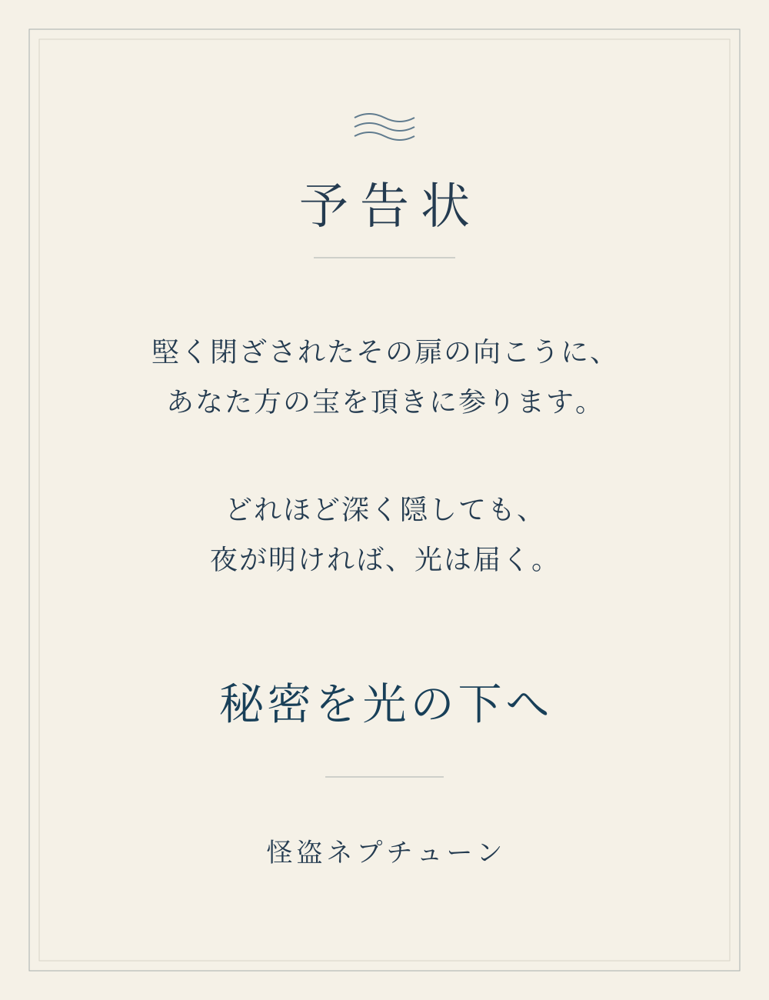

DISCLOSURE DRAFT
怪盗ネプチューン 公開声明草案
声明
予告状には、いつも同じ言葉を残した。
秘密を光の下へ
盗みの予告だと思われていたはずだ。実際、私は怪盗ネプチューンとして施設に入り、品物を持ち出した。その被害を受けた人たちに、まず謝りたい。指示を受けていたことは、私がしたことの言い訳にならない。
だが、持ち出そうとしていたのは品物だけではない。警察の内部で隠され、書き換えられ、消されようとした記録も、私は集めてきた。予告状の「秘密」は、最初からそれを指していた。
公表すること
ORBIT-12は、警察が怪盗事件を利用して資産や資料を取得し、その後の捜査記録を操作するために始められた。怪盗マーキュリーは警察職員の久世正臣だった。計画の実態を知って異議を唱えた久世の妻子は監督側に拘束され、子どもは別の名前で育てられた。
その子が私、篠崎凪だ。出生時の名は久世凪。特別育成校で育ち、後にVEIL-003として怪盗ネプチューンの役割を与えられた。私以外にも、あの学校には子どもたちがいた。育成の仕組みと、その指示を出した者たちの記録を公表する。
久世が脅されていた事実は、久世が後に行ったことを消さない。久世は本部長の立場で不正な取扱いを承認し、成瀬修一の家族を脅して報告を止めた。成瀬も脅迫を受けた後、事案の隠蔽と怪盗への情報提供に関わり続けた。私は、誰か一人を悪者にして終わらせるつもりはない。
サターンこと藤村智也の担当停止と作戦 OP-0106《帰投》、佐野直哉の照会が差し戻された経緯も、残された資料とともに示す。確認できていない生死や関与者の名を、証拠なしに断定はしない。
残した記録について
久世と成瀬の資料を並べた整理メモに残る「N.S.」は、佐野直哉の署名ではない。私、Nagi Shinozakiのものだ。佐野が疑いを持っていた記録も含め、ばらばらの場所に残された資料を追い、警察の検索索引に写しを残した。
まだこれは公表前の草案だ。保全した記録を、警察の外にいる報道機関と調査を担う人たちへ渡し、誰もが検証できる形で公開する。盗まれた品の所在と私自身の行為についても明らかにし、責任から逃げない。
隠されていたことを、隠した側だけの記録で終わらせない。
怪盗ネプチューン
篠崎 凪（久世 凪）
関連ドキュメント
怪盗ネプチューンの予告状

